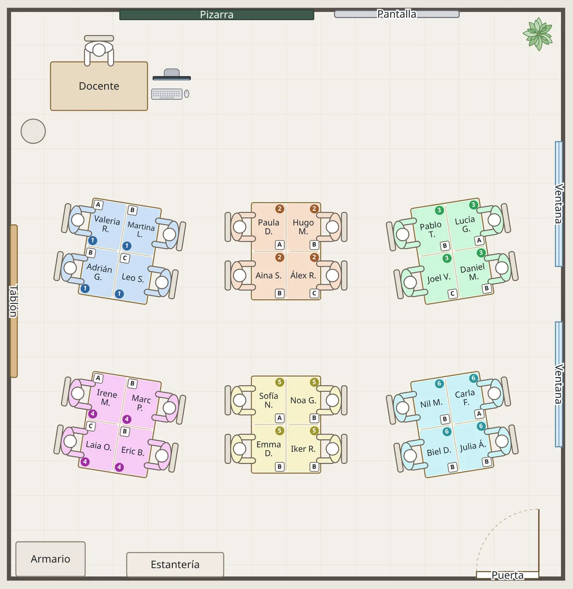

Qué es AulaMap
AulaMap sirve para decidir dónde se sienta cada alumno y tenerlo a mano en un plano del aula. Está pensado para tutorías y para cualquier docente que quiera organizar el espacio con criterio pedagógico: agrupar para trabajar en equipo, separar a quien no conviene que esté junto o preparar una distribución para un examen.
El plano se dibuja con las medidas reales del aula, así que lo que se ve en pantalla es lo que cabe de verdad. Se puede imprimir para tenerlo en la mesa, compartir con el equipo docente y guardar varias clases.

Aula
Aquí se reproduce el aula tal como es: medidas, pantalla o pizarra, mesa del docente, puerta, ventanas, armarios y el resto del mobiliario.
Las mesas del alumnado son opcionales. Si ya hay una disposición fija, se dibuja y se respeta. Si no, el programa puede proponer una a partir de los equipos.
Alumnado
Basta con pegar la lista de la clase, por ejemplo desde la hoja de cálculo o la plataforma del centro. A partir de ahí cada alumno se puede arrastrar a su sitio y cambiar de lugar cuando haga falta.
Esta pestaña es suficiente para quien solo necesita un plano de clase con los nombres.
Equipos (opcional)
Para el trabajo cooperativo, el programa puede formar equipos siguiendo la propuesta de Pujolàs y Lago (2011), con el mismo sistema que GeCo. Cada alumno se asigna a una de tres tipologías:
- A Trabaja con autonomía.
- B Necesita ayuda de vez en cuando.
- C Necesita apoyo para avanzar.
Con esa información se forman tres tipos de equipo:
- Heterogéneos, que combinan las tres tipologías. Son los equipos base del trabajo cooperativo.
- Homogéneos, que reúnen alumnado de la misma tipología para tareas diferenciadas.
- Temporales, formados al azar para dinámicas puntuales.
También se puede indicar qué alumnos no deben coincidir en un mismo equipo.
El programa no se limita a hacer los grupos: también coloca las mesas automáticamente, una por equipo, orientadas hacia la pantalla y con espacio para circular entre ellas.
Todo es opcional y admite distintos grados de intervención del docente:
- Asignar a cada alumno su equipo a mano, sin generación automática.
- Sentar los equipos en una disposición de mesas ya existente, que se respeta tal como está.
- Dejar que el programa monte el aula y retocar después lo que haga falta.
En el plano, cada equipo se distingue por su color y su número, y la tipología de cada alumno puede mostrarse u ocultarse.
Privacidad
Los datos no salen del navegador: no hay cuentas, ni servidor, ni seguimiento. Al compartir un plano se puede enviar sin los nombres del alumnado, y la tipología solo aparece al imprimir si está visible en pantalla.